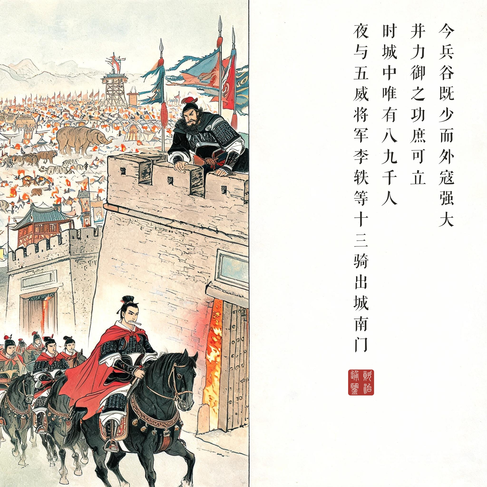
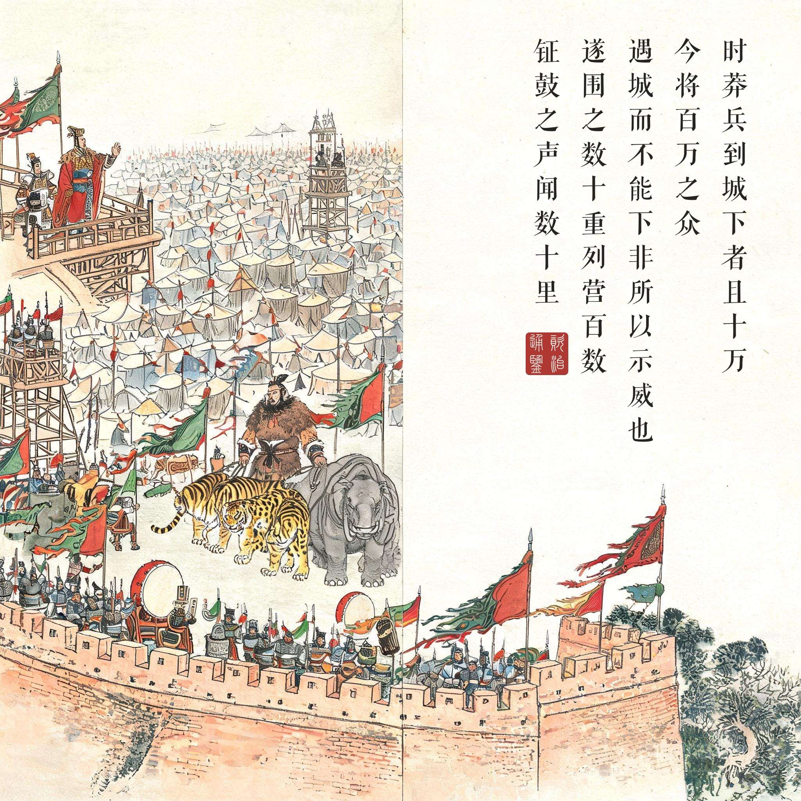
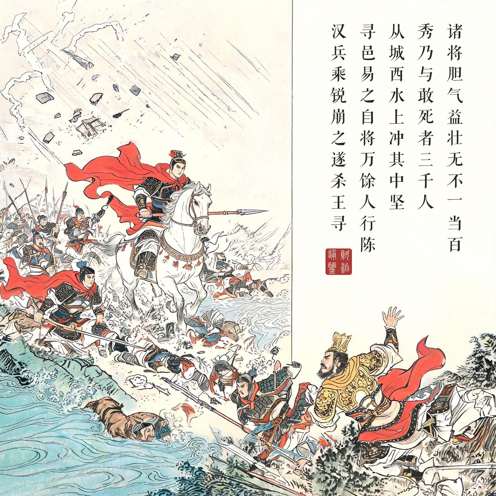
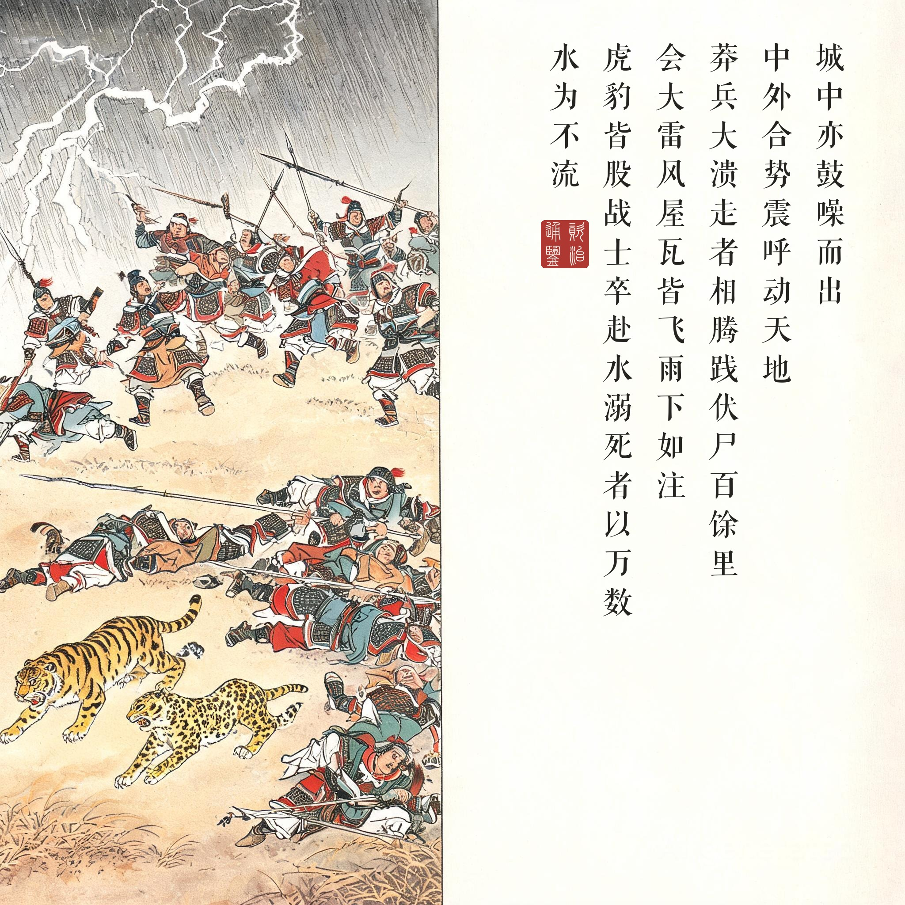

《资治通鉴 · 卷第三十九 · 汉纪三十一》淮阳王更始元年（公元 23 年）
（据 daizhigev20《资治通鉴》底本节录）
诸将见寻、邑兵盛，皆反走，入昆阳，惶怖，忧念妻孥，欲散归诸城。刘秀曰：“今兵谷既少，外寇强大，并力御之，功庶可立；如欲分散，势无俱全。……时城中唯有八九千人，秀使王凤与廷尉大将军王常守昆阳，夜与五威将军李轶等十三骑出城南门，于外收兵。时莽兵到城下者且十万，秀等几不得出。……遂围之数十重，列营百数，钲鼓之声闻数十里。……秀乃与敢死者三千人从城西水上冲其中坚。寻、邑易之，自将万馀人行陈，敕诸营皆按部毋得动，独迎与汉兵战，不利，大军不敢擅相救。寻、邑陈乱，汉兵乘锐崩之，遂杀王寻。城中亦鼓噪而出，中外合势，震呼动天地。莽兵大溃，走者相腾践，伏尸百馀里。会大雷、风、屋瓦皆飞，雨下如注，滍川盛溢，虎豹皆股战，士卒赴水溺死者以万数，水为不流。王邑、严尤、陈茂轻骑乘死人度水逃去。
诸将见王寻、王邑兵势强盛，都往回逃进城，惶恐不安，惦记妻儿家小，想分散各自回家。刘秀说：“如今兵少粮少，外寇强大，合力抵御，或许还能立功；如果分散而逃，势必谁也保不住。……当时城中只有八九千人，刘秀让王凤和廷尉大将军王常守昆阳，自己夜里带着五威将军李轶等十三骑出城南门，到外面收拢兵马。当时莽兵抵达城下的已有将近十万，刘秀等人几乎出不了城。……（莽军）把昆阳围了几十重，列营上百座，钲鼓之声几十里外都听得见。……刘秀率敢死之士三千人从城西水边直冲敌军中坚。王寻、王邑轻视他们，亲自带一万多人摆开阵势，命令各营都按兵不动，独自迎战汉兵，交锋不利，大军又不敢擅自相救。王寻、王邑的阵形大乱，汉兵乘锐气冲垮了他们，当场斩杀王寻。城里守军也擂鼓呐喊杀出，内外合力，喊杀声震动天地。莽兵全面崩溃，逃跑的人自相践踏，尸体倒了一百多里。恰逢大雷、大风，屋顶的瓦全都飞了起来，暴雨如注，滍川洪水暴涨，虎豹都吓得发抖，士卒跳水淹死的数以万计，尸体把河水都堵得不再流动。王邑、严尤、陈茂只带着轻骑兵踩着死人渡水逃走。
以“不可能”为食的战役。昆阳之战在中国战争史里近乎神话：八九千守军、十三骑突围、三千敢死破百万。但它拆开看每一步都是冷静的算术——刘秀劝守城时算的是“分散必亡、并力或存”；出城搬兵时算的是昆阳必须钉住莽军主力；冲阵时算的是“诸营按部毋得动”这道敌方军令等于给斩首战术开的门。王邑的每一个决定都在帮倒忙：拒绝严尤“先攻宛城”的正确建议、下令围城示威、又下令各营不许驰救——骄与僵的组合，把百万大军变成了一座无法反应的雕塑。
天助与人事的叙事比例。《通鉴》写昆阳，最动人的一笔是暴风雨：大雷风、屋瓦皆飞、滍川盛溢、虎豹股战。后世常把这一段读成“天命归汉”的宣传，但司马光的落点其实在人事——虎豹是王莽带来的，溃兵是被自己的统帅害死的，洪水只是替百万败军收尸。巨毋霸的仪仗队从出场到灭队，画的是迷信武力的王朝最后的排场：靠猛兽吓人者，死于猛兽先逃。
刘秀的出场定调。注意本回刘秀的画法：守城辩论时他是众人皆怒中“笑而起”的那个，突围时是十三骑的领队，冲阵时“步骑俱进、无不一当百”。更始政权的诸将此刻还在“忧念妻孥”，而这位将来的光武帝已经展示了他的全部特质——镇定、算度、身先士卒、把危险换成立功。昆阳是刘秀的第一课，也是天下认识刘秀的第一眼。